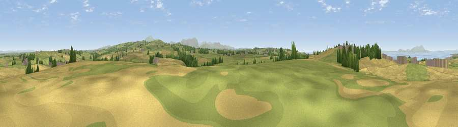

Viewpoint near Crosby
#9093 in England · top 54% of its area beats it · near CrosbyThe view, rendered

A 360° render of this exact spot computed from the terrain model, tree cover and land cover — summer colours, afternoon light, calibrated against photographs of famous viewpoints. Real trees, hedges and buildings will differ in detail.
The panorama
Grey silhouette: terrain skyline in each direction (720 bearings, Earth curvature and refraction included). Dashed green: skyline with trees (+15 m) and buildings (+8 m) as obstacles. Blue strip: how far the ground is visible on each bearing.
Where the view opens
Wedge length = distance to the farthest visible ground on that bearing (vegetation-aware). Rings at 10, 25 and 50 km.
What fills the view
53% grassland · 34% cropland · 6% water · 5% woodland · 2% built-up
Angular shares of the visible panorama (visual magnitude), not map area. Landscape diversity 0.48 (0–1 Shannon).
Key numbers
More beautiful places nearby
The staircase of upgrades: each row has a higher view potential than everything closer. Driving times are estimates from straight-line distance, calibrated against real road routing — check an actual route before setting out.
| Place | Direction | Drive | Score |
|---|---|---|---|
| Viewpoint near Crosby | W · 1 km | ~3 min | 65.6 |
| Viewpoint near Birkby | WSW · 3 km | ~7 min | 72.1 |
| Viewpoint near Tallentire | ESE · 5 km | ~10 min | 75.4 |
| Moota Hill | ESE · 6 km | ~14 min | 77.3 |
| Watch Hill (Setmurthy Common) | SE · 10 km | ~19 min | 77.4 |
| Viewpoint near Bewaldeth | E · 13 km | ~24 min | 78.0 |
| Viewpoint near Embleton | SE · 14 km | ~25 min | 81.8 |
| Viewpoint near Embleton | ESE · 14 km | ~26 min | 84.6 |
54.73176, -3.42343 · source: screening · position refined by local search. Computed location — check access rights before visiting.